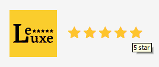

Introduction
Requirements
Before we dive in, I want to thank and congratulate you on purchasing one of my items. I truly appreciate your support and I'll do my best to provide you with an outstanding service.
Let's go over the minimum requirements that you will need in order to have a fully functional site using this template running in no time.
- An available domain - I recommend namecheap
- Hosting provider - I recommend (mt)
- FTP program (FileZilla, Cyberduck etc)
- The template files that you downloaded from themeforest.net/downloads
To customize the template you'll need basic HTML, CSS or JavaScript knowledge (depending on the task). If you need help, there are multiple professional freelancers on Envato Studio that can deliver your custom project requirements for a small fee.
Template Files
After purchasing the template, your unzipped folder should have the following files contained within it.
- Available Files
- Documentation (folder with this help file)
-
HTML (source files)
- assets (style and scripts)
- tmp (files for your reference, can be deleted)
- favicon.png (browser tab icon for the site)
- index.html (homepage HTML file)
- sendmail.php (example for contact form)
- *.html (other HTML page files)
Install via FTP
Copy the files and folders inside the HTML folder to your preferred web hosting location. This will get you started and you'll be able to modify the template, going forward, based on your specific needs.
Basic Setup
Style Settings
The style.css file is the base stylesheet and must be included (mandatory) in order for the site to display correctly. This base stylesheet depends on other stylesheets that also must be included (bootstrap-reboot.css, materialdesignicons.css). If you need to add your own custom style, you can optionally edit and include the style-custom.css (to preserve core files intact and allow proper template updates):
<link href="assets/css/bootstrap-reboot.css" rel="stylesheet"> <link href="assets/css/materialdesignicons.css" rel="stylesheet"> <link href="assets/css/style.css" rel="stylesheet"> <link href="assets/css/style-animations.css" rel="stylesheet"> <link href="assets/css/style-custom.css" rel="stylesheet">
The style.css file is well structured into corresponding sections and has a Table of contents, at the top, which you can refer to anytime. The stylesheet uses the mobile-first technique and it is progressively enhanced (using media queries) for larger displays as well.
Markup Structure
This template has a responsive general layout that can fit well into the requirements of any project. You can customize the logo, menu, featured area, content sections as you need - the markup is pretty much self documented. The general inner page template structure is (almost) the same throughout the template. Here it is:
<header id="identity"> <div class="logo"> <h1></h1> </div> <div class="languages"> <ul>...</ul> </div> </header> <div id="site-menu"> <nav class="nav-menu"> <ul>...</ul> </nav> </div> <div class="menu-overlay"></div> <div class="site-menu-toggle">...</div> <div id="social-profiles"> <nav class="social-menu"> <ul>...</ul> </nav> </div> <section class="hero-media"> ... </section> <div class="content-wrap clearfix"> <div class="entry entry-page"> <h2 class="entry-title">...</h2> <div class="entry-content"> ... </div> </div> <div class="entry-copyright"> ... </div> </div> <div class="additional-menu-content"> ... </div> <div class="booking-form"> ... </div>
You can change the logo image by placing/uploading an image file and setting it in the <h1> element in the header section.
If you want a text version instead of a logo image just replace the <img> tag with the desired text string:
<h1 class="text"><a href="index.html">LeLuxe</a></h1>
The template adds different classes to the body element (home, fullpage, full-content, has-booking, has-additional-menu-content, error404), so make sure to add them too based on the sample files.
SEO Settings
The template contains useful <head> information that you would probably want to edit for SEO reasons: title, description, keywords and favicon:
<title>Title goes here</title> <meta name="description" content="Description entered for SEO"> <meta name="keywords" content="list of keywords"> <link rel="shortcut icon" href="favicon.png">
Configuration
CSS Styling
Template uses only one optimized CSS file that uses mobile first approach. That means all the style is applied for mobile devices first and if the screen is bigger the template adapts its features as well. The stylesheet contains general reset rules so all browsers behave almost the same way. This stylesheet also contains some general styling, such as anchor tag colors, font-sizes, etc. Keep in mind, that these values might be overridden at any time.
If you would like to edit a specific section of the site, simply find the appropriate label in the CSS file, and then scroll down until you find the appropriate style that needs to be edited (or use a quick search in your favorite editor). Every element in the template can be customized easily this way. Make sure you check out the HTML markup first and then modify its style in the CSS file.
JavaScript Widgets
This theme imports two mandatory JavaScript files: jQuery and functions.js. jQuery is a JavaScript library that greatly reduces the amount of code that you must write. The functions.js script is used to initialize everything and add events to certain page elements. Here is the place where you can modify behaviour - make sure you study it for more information.
The template also includes some plugins in order to enhace the user experience - so make sure you check them out in their own separate file. Check out the documentation of each plugin for its complete set of options. Each page may include a different set of plugins at the end of the file (recommanded above the closing body tag) and initialized inline on the spot.
Tips & Tricks
Here are a couple of tricks used in this template and information on how to apply them:
- set active menu item: add a current-menu-item class to the active menu element (add it to the <li> element);
- create a link button by adding a button class to an anchor like this:
<a class="button" href="#">Button</a>
- make sure you check out the styleguide.html for more useful widgets, tips and tricks.
Further Info
Credits
- jQuery
- Bootstrap
- modernizr
- Work Sans font
- Eczar font
- Material Design Icons
- Owl Carousel 2
- Zebra Datepicker
- Fancybox 3
- jQuery Form
- Unsplash
Please note that the images shown in previews are not included in the download package due to licensing restrictions. All images used are intellectual property of their respective owners and are used only for preview purposes.
Further Support
If you have any questions that are beyond the scope of this help file, please feel free to email via the Support tab of the item or via my user page contact form (right sidebar, at the bottom). I'd appreciate if you can help me out by rating and leaving your feedback for the theme via themeforest.net/downloads. Thank you and good luck with your work!
